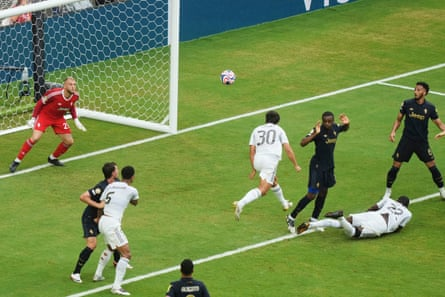

Kylian Mbappé at last made his debut at the Club World Cup, coming on to face Juventus two weeks and four games after he was hospitalised with a stomach virus that saw him lose five kilos. But while the Hard Rock Stadium chanted his name, cheered as he made his way to the halfway line and stood as one to hand him an ovation when he came on, the excitement overflowing, it was the kid for whom Rita Hayworth is family but many of them had not heard of a month ago who took Real Madrid into the quarter-final.
The best competitions always have a revelation; here, it is the 21-year-old Gonzalo García. He scored his third goal in the US, a superb thumping header doing what no one else could over 90 minutes here, and beating the Juventus keeper, Michele Di Gregorio. A family of rugby players, bullfighters, and perhaps the most famous actress there ever was – his grandfather was Rita’s cousin – has a footballer too, and he looks like being some player. Good enough, says Spain’s under-17 coach Hernán Pérez, to be Madrid’s striker for a decade to come.
With the permission of Mbappé, of course. But Xabi Alonso likes him, that’s for sure, and García has been superb stateside. On a wet afternoon in Miami, where a Madrid team that are progressing well but found themselves repeatedly hitting a wall, he was decisive once more, there when they needed him most to set up a meeting with Borussia Dortmund – hi Jude, hi Jobe – or Monterrey – hi, Sergio Ramos – in the next round.
In the end, Madrid deserved it, far the better side, although it did take a little while to gain control and the early moments of illumination came mostly from another kid, Juventus’s Kenan Yildiz, who combined often with Andrea Cambiaso and Randal Kolo Muani, while Khéphren Thuram and Francisco Conceição too were influencing this. The 20-year-old, left-footed, small, socks half down, backside low, has been described by Kolo Muani as “magic” and there were moments he left his mark here. The first time he got the ball, the shot was scuffed, it is true; the others, the connection was invariably cleaner. At times in the first half it was lovely to watch.
He played a key part in what might have been the opener after six minutes. The move began way back on the edge of the Juventus penalty area, where Trent Alexander-Arnold lost out and Kolo Muani set off on a long, dynamic run. Yildiz went with him, slipping the second of two nicely weighted passes in behind Madrid’s defence. Alone before Thibaut Courtois, Kolo Muani scooped over him but fractionally over the bar too. Soon after a neat turn saw Yildiz’s shot deflected wide, there was a moment when he slipped the ball between Alexander-Arnold’s legs and smart footwork took him away from Alexander-Arnold and Antonio Rüdiger for Cambiaso to cross.
Gonzalo García heads in Trent Alexander-Arnold’s cross for the winner.Photograph: Marta Lavandier/AP
From another Cambiaso delivery, Conceição headed down. The chance was a decent one, but the save from Courtois was simple enough. Madrid, playing with three central defenders once again, had a degree of control but if not a huge amount of incision in those early phases. But as the half went on, openings appeared, there was a rise in the noise level every time Vinícius started to run and Fede Valverde, as ever, was everywhere firing off shots. By the time he was withdrawn to a standing ovation in the 89th minute, the Uruguayan had racked up seven of them and covered every inch of this pitch.
From one of them in the first half, Di Gregorio dived full length to save. He would have a busy afternoon, sticking out a leg when Valverde got deep into the area and pulled back soon after. As the ball spun up, Daniele Rugani had to hook it away. Next Arda Guler, growing into this in the playmaker role that looks increasingly like becoming his permanent place, lifted over his marker and almost got the ball across. Just before the break, Alexander-Arnold did, but his delivery raced right though the six-yard box.
The second half began with Jude Bellingham setting up Valverde to take on a volley that skidded and spun just wide, and although Rüdiger and Courtois kicked each other as they swiped at a clearance, Alonso’s side got on top. Soon they were dominating entirely. Alexander-Arnold fired just over, Manuel Locatelli had to block Vinícius, and both Bellingham and Dean Huijsen drew saves from Di Gregorio.
Then the goal came, Alexander-Arnold’s lovely soft-shoed cross meeting García’s leap. Turning his neck, the 20-year-old thudded a header past Di Gregorio, flinging up his arms but just not fast enough.
Madrid kept coming but the Italian pushed away Valverde’s acrobatic volley and then stuck out a leg to stop Guler’s shot after Vinícius and Mbappé had opened up Juventus on the left. When he reached Aurélien Tchouaméni’s low drive on 82 minutes, it took him into double figures in saves but there was no reward. Only once had he been beaten and it was enough, Madrid’s revelation there again.